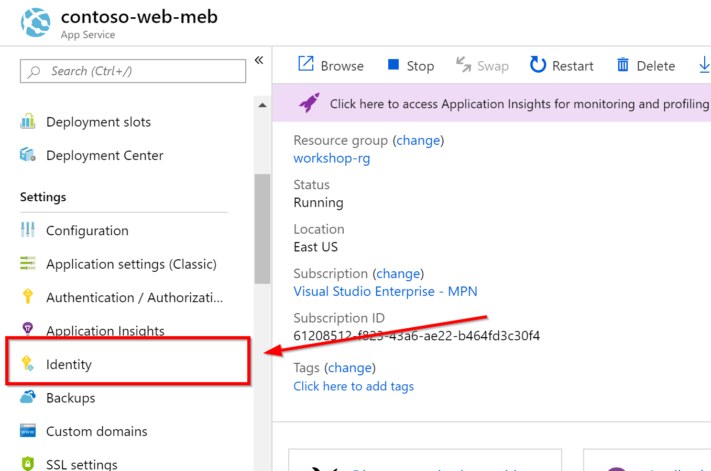

Introduction
Welcome to Global Azure Bootcamp 2019! All around the world user groups and communities want to learn about Azure! On April 27, 2019, all communities will come together once again in the sixth great Global Azure Bootcamp event! Each user group will organize their own one day deep dive class on Azure the way they see fit and how it works for their members. The result is that thousands of people get to learn about Azure and join together online under the social hashtag #GlobalAzure!
About the 2019 Louisville Global Azure Bootcamp
The 2019 Louisville Global Azure Bootcamp is a free one-day global training event on Azure, from the community to the community. See our event home page for more details.
This years format will be a blend of brief presentations, followed by hands-on and guided labs.
Our speakers include:
Getting Started
To get started you'll need the following pre-requisites. Please take a few moments to ensure everything is installed and configured.
- Microsoft Windows PC or Mac or Linux. Just have a laptop.
- Azure Subscription (Trial is ok, or an Azure account linked to a Visual Studio subscription. See later sections of this chapter to create a free trial account or activate your Visual Studio subscription)
What You're Building
Azure is big. Really big. Too big to talk about all things Azure in a single day.
We've assembled an exciting workshop to introduce you to several Azure services that cloud developers should know about:
- Web app
- Key Vault
- Azure SQL Database
- Event Hub
- Azure Functions
- API Management
- Cosmos DB
- Virtual Machines
In today's workshop, you'll get started with Azure and learn how to navigate through the Azure portal! You'll activate a free Azure subscription, learn about Resource Groups, and navigate through the Azure portal. You'll also create your development environment virtual machine running Visual Studio Community Edition.
Next, you'll learn about Platform as a Service (PaaS) offerings while creating a simple web app to manage data stored in an Azure SQL database. You'll finish by securing the data connection between your application and the database using an MSI (Managed Service Identity), then deploying to Azure services that host your web app.
Once your app is up and running, we'll teach you how your app can be restructured for scalability by separating the backend data access later into a separately-hosted ASP.NET Web API app. You'll also learn how to secure your service.
After you've built and deployed a REST API, you'll learn how you can use Azure Functions and Cosmos DB to aggregate your data and ready it for consumption by the public.
Finally, after developing a database of publicly-consumable data, we'll explore how to advertise the data publicly as an API using App Services, Web API, and API Management. See how it's easy to have customers request access to the data, subscribe to your service, and generate additional revenue.
Essentially...
Key concepts and takeaways
- Navigating the Azure portal
- Using Azure Resource Groups to manage multiple Azure services
- Deploying a web app to Azure web app service
- Decomposing an ASP.NET Core 2.2 MVC app into decoupled Web API services
- Deploying an Azure SQL database
- Using Events Hubs, Azure Functions, and Cosmos DB to develop an aggregated datastore
- Using the Azure API Management service to create a subscription-based API offering
Agenda
- Chapter 0: Introduction
- Chapter 1: Getting Started in Azure
- Chapter 2: Connecting an Azure SQL Database
- Chapter 3: Increasing the Security of Deployed Apps
- Chapter 4: Decoupling Web Apps with a REST API Service Layer
- Chapter 5: Comsuming a REST API
- Chapter 6: Securing REST API Services with API Management
- Chapter 7: Consuming a Secure REST API
- Chapter 8: Introduction to the API Economy
- Chapter 9: Using Cosmos DB to store Aggregated Data
- Chapter 10: Exposing Aggregated Data for Profit
Materials
You can find additional lab materials and presentation content at the locations below:
- Presentation: https://github.com/mikebranstein/global-azure-bootcamp-2019
- Source code for the code used in this guide: https://github.com/mikebranstein/global-azure-bootcamp-2019
- This guide: https://github.com/mikebranstein/global-azure-bootcamp-2019-instructions
Creating a Bootcamp Trial Subscription
There are several ways to get an Azure subscription, such as the free trial subscription, the pay-as-you-go subscription, which has no minimums or commitments and you can cancel any time; Enterprise agreement subscriptions, or you can buy one from a Microsoft retailer. In this exercise, you'll create a trial subscription using the code you were given at the bootcamp.
Exercise: Create a Subscription with the Bootcamp Trial
Browse to https://www.microsoftazurepass.com/.
Use the Azure Code on the handout you were given to get started.
This concludes the exercise.
Creating a Trial Azure Subscription
If you already have an Azure account
If you have an Azure account already, you can skip this section. If you have a Visual Studio subscription (formerly known as an MSDN account), you get free Azure dollars every month. Check out the next section for activating these benefits.
There are several ways to get an Azure subscription, such as the free trial subscription, the pay-as-you-go subscription, which has no minimums or commitments and you can cancel any time; Enterprise agreement subscriptions, or you can buy one from a Microsoft retailer. In exercise, you'll create a free trial subscription.
Exercise: Create a Free Trial Subscription
Browse to the following page http://azure.microsoft.com/en-us/pricing/free-trial/ to obtain a free trial account.
Click Start free.
Enter the credentials for the Microsoft account that you want to use. You will be redirected to the Sign up page.
Note
Some of the following sections could be omitted in the Sign up process, if you recently verified your Microsoft account.
If you already ahve an Azure subscription tied to your Microsoft account, you may see a screen like this:

You're wekcome you use your existing subscription for the bootcamp. If you're planningto use your existing subscription, you can skip this exercise. Click Sign Up to create a new subscription.
Complete step 1 by entering your mobile phone number.

Select Text me or Call me to verify that you are a real person. Typein the verification code you receive on the phone or via text.
Next, complete the Payment information section.
A Note about your Credit Card
Your credit card will not be billed, unless you remove the spending limits. If you run out of credit, your services will be shut down unless you choose to be billed.

Press Next after completing the credit card section.
In the Technical Support section, select the last option (No technical support) and click Next.

In the Agreement section, check the I agree to the subscription Agreement, offer details, and privacy statement option, and click Sign up.
Your free subscription will be set up, and after a while, you can start using it. Notice that you will be informed when the subscription expires.
Your free trial will expire in 29 days from it's creation.
Activating Visual Studio Subscription Benefits
If you happen to be a Visual Studio subscriber (formerly known as MSDN) you can activate your Azure Visual Studio subscription benefits. It is no charge, you can use your MSDN software in the cloud, and most importantly you get up to $150 in Azure credits every month. You can also get 33% discount in Virtual Machines and much more.
Exercise: Activate Visual Studio Subscription Benefits
To active the Visual Studio subscription benefits, browse to the following URL: http://azure.microsoft.com/en-us/pricing/member-offers/msdn-benefits-details/
Scroll down to see the full list of benefits you will get for being a MSDN member. There is even a FAQ section you can read.
Click Activate your monthly Azure credit to activate the benefits.

You will need to enter your Microsoft account credentials to verify the subscription and complete the activation steps.
Preparing your Azure environment
You might be wondering how you can participate in a cloud development workshop and not need any software installed.
Thanks to the Azure Resource Manager and some nifty templates I put together, we're going to provision a virtual machine (VM) with Visual Studio (and all the tools you'll need) installed in your Azure subscription. From that point forward, you can work from the VM.
It takes about 10 minutes to get the VM deployed to your subscription, so let's get started!
Exercise: Provisioning a Visual Studio Community VM in your Azure Subscription
Start by clicking the Deploy to Azure button below.

This opens the Azure portal in a new tab of your browser. If you're prompted to sign in, do so.
When the page loads, you'll see this custom deployment page:

Under Basics, select/enter the following
- Subscription: your Azure subscription
- Resource group: Create new
- Resource group name: workshop-rg, or some other name that's easy to remember
- Location: East US
Resource Groups
Formally, resource groups provide a way to monitor, control access, provision and manage billing for collections of assets that are required to run an application, or used by a client or company department. Informally, think of resource groups like a file system folder, but instead of holding files and other folders, resource groups hold azure objects like storage accounts, web apps, functions, etc.
Naming Resource Groups
I like to name my resource groups after their purpose, and append them with -rg, which signifies they are a resource group.
Under Settings, enter
- Virtual Machine Name: workshop-vm, or some other name that is less than 15 characters long, and no special characters
- Admin Username: your first name, or some other username without spaces
- Admin Password: P@ssW0rd1234, or another 12-character password with upper, lower, numbers, and a special character
WARNING
Do not forget your username and password. Write it down for today.
Approving the "Purchase"
Scroll down to the bottom of the page and click two boxes:
- I agree to the terms and conditions stated above
- Pin to dashboard
Press the Purchase button.
Deploying the VM
After a few moments, the deployment of your VM will begin, and you'll see a status notification in the upper right:

...and a deployment tile on your dashboard:

Now, wait for about 10 minutes and your virtual machine will be deployed and ready to use.
That's it for the pre-requisites for today's workshop. Wait until your VM is created, and we'll be getting started soon!
Getting started in Azure
Pre-requisites
Before we go any further, be sure you have all the pre-requisites downloaded and installed. You'll need the following:
- Microsoft Windows PC or Mac
- Evergreen web browser (Edge, Chrome, Firefox)
- Azure Subscription (trial is ok, and you should have already done this in the chapter 0)
- A Visual Studio Community edition VM running in Azure (see chapter 0 for setting this up)
NOTE
If you've been following along, you should have all of these above items.
Organizing your resources in the Azure portal
One of the most important aspects of your Azure subscription and using the Azure portal is organization. You can create a lot of Azure resources very quickly in the portal, and it can become cluttered quickly. So, it's important to start your Azure subscription off right.
Our first stop will be to create a new Dashboard to organize our Azure resources we're building today.
Exercise: Create a Dashboard
Creating a Dashboard
We'll start by creating a dashboard.
Login to the Azure portal, click +, give the dashboard name, and click Done customizing.
That was easy! Dashboards are a quick way of organizing your Azure services. We like to create one for the workshop because it helps keep everything organized. You'll have a single place to go to find everything you build today.
Pinning a Resource Group to the Dashboard
Now that you have a new dashboard, let's put something on it. We'll be searching for the resource group you created in chapter 0 (the one that is holding your VM), and pinning it to this dashboard.
Resource Groups
You'll recall from the last chapter that resource groups provide a way to monitor, control access, provision and manage billing for collections of assets that are required to run an application, or used by a client or company department. Informally, think of resource groups like a file system folder, but instead of holding files and other folders, resource groups hold azure objects like storage accounts, web apps, functions, etc.
Start by searching for the resource group you created in chapter 0. My resource group was called workshop-rg.

Click in the search bar at the top. If you're lucky your resource group will be at the very top (like mine was). If not, type it's name and click on it.
This opens the resource group. Next, click the pin icon at the upper-right to pin the resource group to your dashboard:
Finally, close the resource group, by clicking the X in the upper right corner (next to the pin icon). You should see the resource group pinned to your dashboard:
Now that you have the VM's resource group pinned to your dashboard, it will be easy to locate the VM in later exercises.
Go ahead and click ont he Virtual machine, then pin it to the dashboard. When you're finished, you should see something like this:

That wraps up the basics of creating dashboard, creating resource groups, and pinning resources to a dashboard. We're not going to take a deep dive into Azure Resource Group. If you're interested in learning more, check out this article.
Logging into your virtual machine
Next, let's get logged into the VM that we created in chapter 0.
Exercise: Logging into your VM
Start by navigating to your Azure portal dashboard.
Locate the VM resource group you pinned earlier in this chapter and click on your virtual machine:

Click the Connect button.
This displays a download window on the right. Press the Download RDP file button.

This downloads a file to your computer that will open in your Remote Desktop program.

Click the downloaded file to open a connection to your VM. Enter your username and password you created earlier.

Click OK to connect.
If you're prompted by a security message, respond Yes:

You're now connected to your VM.
Download additional software
If you're like me, you have a standard toolset you like to use. Please, download software for your VM and don't forget your browser of choice, Notepad++, Visual Studio Code, etc.
This concludes the exercise.
Now that you're connected to your VM, you can continue to workshop from inside the VM.
Running a VM in Azure
If you're worried about excessive charges to your Azure subscription because you're running a VM constantly, don't worry. This VM is programmed to shut itself down every evening at 7:00 PM EST.
Clone project from master branch
Let's get started by getting the master branch.
Exercise: Getting the bootcamp files
Clone or download the master branch from https://github.com/mikebranstein/global-azure-bootcamp-2019.
Use this link to download a zip file of the master branch.

Unblock the .zip file!
Don't open the zip file yet. You may need to unblock it first!
If you're running Windows, right-click the zip file and go to the properties option. Check the Unblock option, press Apply, press Ok.
Now it's safe to unzip the file.
About Contoso University
The Contoso University web app is a small app that is used to manage the faculty, students, courses, and grades of Contoso University. It's not very advanced, but comes with pre-seeded data, and is ideal to demonstrate the concepts of this workshop.
Verify the site works
Exercise: Compiling the solution
Before we can compile the solution, we need ot ensure .NET Core 2.2 is installed on your virtual machine.
Locate and run Visual Studio Installer from the Start Menu:
Select the Modify option under Visual Studio 2019:
On the right, expand the section labeled .NET Core cross-platform development, and check the box labeled .NET Core 2.2 development tools.

Click the Modify button on the bottom to install. The install takes approx. 5 minutes to complete.
When the install is finished, you can update Visual Studio 2019 to the latest version (if you want), but it isn't necessary.
Next, open the solution in Visual Studio 2019 by double-clicking the ContosoUniversity.sln file in the src folder of the extracted files:
Logging into Visual Studio the first time
When you open Visual Studio the first time, it may take a few minutes. Be patient. You'll probably be prompted to sign in. Use your Microsoft account to sign in (the same one you used to sign up for the Azure trial).
The opened solution should look like this:

Build and debug the solution. You should see the Speech Recognition site load in your browser.
This concludes the exercise.
That's it! You're up and running and ready to move on! In the next section, you'll learn how to deploy your website to Azure.
Understanding App Service and Web Apps
In the last part of this chapter, you'll learn how to create an Azure Web App and deploy the Speech Service website to the cloud. In short, I like to think of Azure Web Apps like IIS in the cloud, but without the pomp and circumstance of setting up and configuring IIS.
Web Apps are also part of a larger Azure service called the App Service, which is focused on helping you to build highly-scalable cloud apps focused on the web (via Web Apps), mobile (via Mobile Apps), APIs (via API Apps), and automated business processes (via Logic Apps).
We don't have time to fully explore all of the components of the Azure App Service, so if you're interested, you can read more online.
What is an Azure Web App?
As we've mentioned, Web Apps are like IIS in the cloud, but calling it that seems a bit unfair because there's quite a bit more to Web Apps:
Websites and Web Apps: Web Apps let developers rapidly build, deploy, and manage powerful websites and web apps. Build standards-based web apps and APIs using .NET, Node.js, PHP, Python, and Java. Deliver both web and mobile apps for employees or customers using a single back end. Securely deliver APIs that enable additional apps and devices.
Familiar and fast: Use your existing skills to code in your favorite language and IDE to build APIs and apps faster than ever. Access a rich gallery of pre-built APIs that make connecting to cloud services like Office 365 and Salesforce.com easy. Use templates to automate common workflows and accelerate your development. Experience unparalleled developer productivity with continuous integration using Visual Studio Team Services, GitHub, and live-site debugging.
Enterprise grade: App Service is designed for building and hosting secure mission-critical applications. Build Azure Active Directory-integrated business apps that connect securely to on-premises resources, and then host them on a secure cloud platform that's compliant with ISO information security standard, SOC2 accounting standards, and PCI security standards. Automatically back up and restore your apps, all while enjoying enterprise-level SLAs.
Build on Linux or bring your own Linux container image: Azure App Service provides default containers for versions of Node.js and PHP that make it easy to quickly get up and running on the service. With our new container support, developers can create a customized container based on the defaults. For example, developers could create a container with specific builds of Node.js and PHP that differ from the default versions provided by the service. This enables developers to use new or experimental framework versions that are not available in the default containers.
Global scale: App Service provides availability and automatic scale on a global datacenter infrastructure. Easily scale applications up or down on demand, and get high availability within and across different geographical regions. Replicating data and hosting services in multiple locations is quick and easy, making expansion into new regions and geographies as simple as a mouse click.
Optimized for DevOps: Focus on rapidly improving your apps without ever worrying about infrastructure. Deploy app updates with built-in staging, roll-back, testing-in-production, and performance testing capabilities. Achieve high availability with geo-distributed deployments. Monitor all aspects of your apps in real-time and historically with detailed operational logs. Never worry about maintaining or patching your infrastructure again.
Deploying to a Web App from Visual Studio
Now that you understand the basics of web apps, let's create one and deploy our app to the cloud!
Earlier in this chapter, you created a resource group to house resources for this workshop. You did this via the Azure Portal. You can also create Web Apps via the Azure portal in the same manner. But, I'm going to show you another way of creating a Web App: from Visual Studio.
Exercise: Deploying to a Web App from Visual Studio 2017
Visual Studio 2019 Warning
This exercise assumes you're running Visual Studio 2019. If you're not, please do.
From Visual Studio, right-click the ContosoUniversity project and select Publish. In the web publish window, select Microsoft Azure App Service, Create New, and press Publish. This short clip walks you through the process:
On the next page, give your Web App a name, select your Azure subscription, and select the Resource Group you created earlier (mine was named workshop-rg), and create a new Free App Service Plan. Read below for more details.
Unique Web App Names
Because a web app's name is used as part of it's URL in Azure, you need to ensure it's name is unique. Luckily, Visual Studio will check to ensure your web app name is unique before it attempts to create it. In other words, don't try to use the web app name you see below, because I already used it.

Click New... to create a new Web App plan.
Web App Plans
Web App plans describe the performance needs of a web app. Plans range from free (where multiple web apps run on shared hardware) to not-so-free, where you have dedicated hardware, lots of processing power, RAM, and SSDs. To learn more about the various plans, check out this article.
Create a new free plan.

After the plan is created, click Create to create the Web App in Azure.
When the Azure Web App is created in Azure, Visual Studio will publish the app to the Web App. After the publish has finished, your browser window will launch, showing you your deployed website.
Web App URLs
The deployed web app has a URL of Web App Name.azurewebsites.net. Remember this URL, because you'll be using it in later chapters.
One final note is to check the Azure Portal to see the App Service plan and Web App deployed to your resource group:
This concludes the exercise.
Connecting an Azure SQL Database
In this chapter you'll learn about Azure SQL Database, how to provision one in the Azure Portal, and how to use Entity Framework Core (EF Core) to seed a local (development database) and an Azure SQL Database.
Overview
Azure SQL Database is a general-purpose relational database-as-a-service (DBaaS) based on the latest stable version of Microsoft SQL Server Database Engine. SQL Database is a high-performance, reliable, and secure cloud database that you can use to build data-driven applications and websites in the programming language of your choice, without needing to manage infrastructure.
Provisioning in Azure
Now that you know what Azure SQL Database can do, let's start using it! You'll start by creating a SQL Database instance in the Azure portal.
SQL Servers and Databases
When creating a SQL Database, you also need to create a SQL Server. The steps below walk you through this process.
Exercise: Creating a SQL Server and Database instance
Start by jumping back to the Azure portal, and create a new resource by clicking the Create a resource button.
Search for SQL Database:

Fill out the required parameters as you create an instance:
- Resource group: the resource group you created earlier
- Database name: ContosoUniversity3
- Server: Press Create new button, complete right side panel
- Server name: unique SQL server name to create
- Server admin login: workshopAdmin
- Password: Enter complex password, write it down
- Location: East US

Press the Select button after completing the server information in the right panel, then press Review and create.

When the SQL Server and database instances are provisioned, they appear in your resource group:

The final step is to navigate to the SQL Server instance by clicking on it.
Secured by default
As with most Azure resources, SQL Server is secured by default, meaning that you cannot access the SQL Server or databases without opening up the attached firewall. In this next step, we'll do just that.
Locate the Firewalls and virtual networks area, click Show firewall settings.

Click the Add client IP button and notice an entry being made in the table below. Then, click Save. This opens the SQL Server firewall to allow you to communicate with it directly for the duration of the workshop.

Next, navigate to the SQL Databases link on the left, and select the ContosoUniversity3 database.
Click the Show database connection strings link:

Copy the connection string and paste it into Notepad, or another text editor:

After pasting the connections tring into a text editor, locate the {your_username} and {your_password} sections and update them with the SQL Server username and password you created previously.
Save this connection string -- you'll need it later!
This concludes the exercise.
Seeding your databases
You may have noticed that the Contoso University app crashes when you navigate to various pages. That's because it's expecting a database exists, but we haven't created it.
In this next step, we'll use Entity Framework's Migrations to create and seed a local SQL database, then do the same for the Azure SQL Database we just created.
Exercise: Seeding the local SQL Database
Every installation of Visual Studio 2019 comes with a development version of SQL Server called MS SQL Local DB. In fact, the Contoso University app is pre-configured to use this SQL Server instance already.
Open the appsettings.json file to see the connection string:
"ConnectionStrings": {
"DefaultConnection": "Server=(localdb)\\mssqllocaldb;Database=ContosoUniversity3;Trusted_Connection=True;MultipleActiveResultSets=true"
}
Notice the server name of (localdb)\mssqllocaldb. This is the local development version of SQL I mentioned above. We'll use this in the next section to "seed" the database with Entity Framework Migrations.
Entity Framework and Migrations
If you're not familiar with Entity Framework and Migrations, don't worry. Entity Framework (EF) is a technology called an object-relational mapper (O/RM). O/RMs (like EF) enable .NET developers to work with a database using .NET objects, and eliminating the need for most of the data-access code they usually need to write (like stored procedures, views, and queries).
EF Migrations are a way to use .NET objects and code to create a SQL database and tables, then seed the database with preliminary data.
The Contoso University app already has Entity Framework installed and configured. Let's use it to create the ContosoUniversity3 database locally by running the migrations.
Using EF Migrations
In Visual Studio, go to the Tools menu, select NuGet Package Manager, then Package Manager Console.
This opens a new area at the bottom of Visual Studio:

In the Package Manager Console, change the Default project to ContosoUniversityData, the type Update-Database and press Enter. The EF Migrations will read the connection string from your configuration file, create the ContosoUniversity3 database, create the tables, and load seed data into the tables. You can see the process happening below:

When the EF Migrations have finished, run the web site, and navigate to the Courses page. You will see the page displays a variety of course data:

This concludes the exercise.
Now that you've used EF Migrations, let's seed the ContosoUniversity3 database in Azure.
Exercise: Seeding the Azure SQL Database
Open the appsettings.json file to adjust the connection string. You'llrecall that we saved the Azure SQL Database connection string in our text editor earlier. Copy the value and paste it into the configuration file.
Mine looks like:

Now that the connection string has been updated, return to the Package Manager Console and run the EF Migrations again.
ContosoUniversityData project
Don't forget to change the default project to ContosoUniversityData before running the migrations.
> Update-Database
This will use the updated connection string to provision and seed the ContosoUniversity3 database in Azure.
When the migrations have finished, run the website to verify it still works.
Now, as a final step, re-deploy your web app to Azure, so it has the updated connection string (pointing to your Azure SQL Database).
This concludes the exercise.
That's it. In the next chapter, you'll learn how to secure your connection string so it isn't visible int he configuration file.
Increasing the Security of Deployed Apps
In this chapter, you'll learn:
- How to secure secrets (like SQL databse connection strings) with Key Vaults
- How to add authentication to your web apps instantly
Securing Secrets in Web Apps
Since the early days of .NET, developers have been putting SQL database connection strings in configuration files. This is not only a bad practice, but a serious security risk for several reasons:
- login credentials are saved in plain-text
- it's easy to accidentally check in the credentials
Because of the risks of plain-text credentials, developers started encrypting the vaules, but this brought challenges with how to encrypt and decrypt, and made a developer's job more difficult.
There's got to be a better way!
Key Vault to the Rescue!
Introducing Key Vault! Azure Key Vault helps solve the following problems:
- Secrets Management: Azure Key Vault can be used to Securely store and tightly control access to tokens, passwords, certificates, API keys, and other secrets
- Key Management: Azure Key Vault can also be used as a Key Management solution. Azure Key Vault makes it easy to create and control the encryption keys used to encrypt your data.
- Certificate Management: Azure Key Vault is also a service that lets you easily provision, manage, and deploy public and private Secure Sockets Layer/Transport Layer Security (SSL/TLS) certificates for use with Azure and your internal connected resources.
- Store secrets backed by Hardware Security Modules: The secrets and keys can be protected either by software or FIPS 140-2 Level 2 validates HSMs
So, with Key Vault, you store your connection strings inside of a secret store instead of in your app configuration file. Then, you simply store the location or URL of the Key Vault in your config file, so when your app starts up, you access the Key Vault, extract your secrets, then continue on as normal.
But wait...don't I need a secret/password to access a Key Vault
Yes you do, but it doesn't make much sense to store that secret inside of your app configuration file. Afterall, that's exactly what we're trying to avoid!
Accessing KeyVault without a Password
That's right. You can actually access the Key Vault without a password - at least a password that you're aware of.
The second critical component to securing your app secrets is something called a Managed Service Identity (or MSI for short). You can think of an MSI like a service account, but a service account that doesn't have a password.
Within Azure, you can assign an MSI to a Web App, so when the app runs it "acts" or "takes on" the role of the MSI. So, once it's been assigned to a Web App, you can give the Web App MSI permissions to access your Key Vault.
To the developer, this seems like magic - when you app runs, it becomes an MSI, then has permissions to access the Key Vault without a password. But behind the scenes Azure is managing the entire process, ensuring your Web App is the only resource using the assigned MSI.
Assigning an MSI to your Web App
Let's get started by assigning an MSI to your web app!
Exercise: Assigning an MSI through the Azure Portal
Navigate to the web app you deployed in an earlier chapter. Mine was called contoso-web-meb.
Scroll down on the left to find a section named Identity. Click on Identity:

On the System assigned tab, change the status to On and press Save.
Click Yes when prompted.

...and that's it! Your MSI (Managed Service Identity) is assigned.
This concludes the exercise.
Creating a Key Vault
Now that you have an MSI assigned to your web app, it's time to create a Key Vault and give the MSI access to read secrets.
Exercise: Creating a Key Vault and Assigning Access
In the Azure portal, search for the Key Vault by searching for it, like you did the SQL Database in an earlier chapter.

Place the Key Vault in the resource group you created for the workshop:
Click the Access policies section, then the + Add new link to add the web app MSI to the Key Vault's authorized users:

Do the following:
- Select Secret management from the Configure from template option
- Click Select principal
- In the box to the right, type the name of your web app (mine was contoso-web-meb)
- Click your web app's name when it appears below
- Click the Select button
- Click Ok
You should now see your web app added:

Click Ok to return to the Key Vault creation screen, and Create to provision the Key Vault.
It will take a few minutes to deploy the Key Vault. When it's finished provisioning, pin it to your dashboard (we'll be using it a lot today).
This concludes the exercise.
Adding Secrets to the Key Vault
Now that you have created a Key Vault and assigned access to it, let's add a secret!
Exercise: Adding a secret to a Key Vault
Navigate to your Key Vault and select the Secrets area on the left:

Click Generate/Import.
For the secret name, enter ConnectionStrings--DefaultConnection. Copy and paste your conneciton string from the app configuration file for the value.
Secret Names Matter
Go back and look at the app configuration file for Contoso University. You'll notice the JSON structure has a ConnectionStrings key following by a sub key of DefaultConnection. This is important.
In Key Vault, we'll mimick this struture by using the same key names and a double dash for the key name. Later, when we tell our web app to read the Key Vault secrets, it will be able to parse the secret name and dynamically replace the correct key/value pair in our configuration file.

Click Create.

This concludes the exercise.
Incorporating Key Vault Access into Web Apps
Now that we have secrets in our Key Vault, let's configure the web app to access the Key Vault.
Exercise: Configuring a Web App to read configuration from a Key Vault
To configure the Contoso University app to read configuration data from the Key Vault, we need to modify the app's startup process to load it's current ocnfiguraiton file, then reach out to the Key Vault, read the secrets, and dynamically load the secret values into our configuration.
Let's start by adding a few NuGet packages to the ContosoUniversity project.
Right-click the Solution, and add the following packages. Be midful to add the specific version(s) we've specified below!
- Microsoft.Azure.Services.AppAuthentication, v1.2.0-preview2
- Microsoft.Extensions.Configuration.AzureKeyVault, v2.2.0
Next, create a new class in the root of the ContosoUniversity project named PrefixKeyVaultSecretManager.cs. Place the following code inside.
using Microsoft.Azure.KeyVault.Models;
using Microsoft.Extensions.Configuration;
using Microsoft.Extensions.Configuration.AzureKeyVault;
using System;
using System.Collections.Generic;
using System.Linq;
using System.Threading.Tasks;
namespace ContosoUniversity
{
public class PrefixKeyVaultSecretManager : IKeyVaultSecretManager
{
public string GetKey(SecretBundle secret)
{
// Remove the prefix from the secret name and replace two
// dashes in any name with the KeyDelimiter, which is the
// delimiter used in configuration (usually a colon). Azure
// Key Vault doesn't allow a colon in secret names.
return secret.SecretIdentifier.Name
.Replace("--", ConfigurationPath.KeyDelimiter);
}
public bool Load(SecretItem secret)
{
return true;
}
}
}
You can think of htis class as a conversion class. The GetKey() function is called each time a key/value pair is restrived from the Key Vault. The function then translates any double dashes into colons. This is an important step because .NET Core apps (like this one) natively translate colons into a heirarchical configuraiton file manner when parsing config values.
So, a value of ConnectionStrings--DefaultConnection is translated by the GetKey() function into ConnectionStrings:DefaultConnection. Then, .NET Core reads the string and replaces the configuration key of ConnectionStrings with sub key DefaultConnection with the value pulled from the Key Vault.
Why not use colons in the Key Vault secret?
You may be wondering why we had to convert double dashes into colons. Unfortunately, key vault key names cannot contain colons, so some type of replacement delimiter must be used. I chose a double dash.
Next, update the CreateWebHostBuilder() function in the Program.cs file to tie everything together. After updaitng the function, don't forget to add the missing references at top.
public static IWebHostBuilder CreateWebHostBuilder(string[] args) =>
WebHost.CreateDefaultBuilder(args)
.ConfigureAppConfiguration((context, builder) =>
{
// only run in "production" mode, so you don't override
// config values when running locally for development
if (context.HostingEnvironment.IsProduction())
{
var config = builder.Build();
// get MSI token from running web app
var tokenProvider = new AzureServiceTokenProvider();
// create kv client, passing MSI token for authorization
var keyvaultClient = new KeyVaultClient((authority, resource, scope)
=> tokenProvider.KeyVaultTokenCallback(authority, resource, scope));
// add the Key Vault "provider" that scans the KV, loading secrets into configuration
builder.AddAzureKeyVault(config["KeyVault:BaseUrl"], keyvaultClient, new PrefixKeyVaultSecretManager());
}
})
.UseStartup<Startup>();
These additional lines of code essentially does the following:
- Only runs the Key Vault loading code when runningin production (so you don't override your development settings)
- Gets the MSI token from the running web app
- Creates a client to talk to the Key Vault through, using the token for an authorization context
- Adds the Key Vault "provider" into the pipeline that builds the configuration file. It also assumes a configuration file value of "KeyVault:BaseUrl" is present
Finally, let's head on over to the configuration file and make a few changes:
Change the database connection string back to the MS SQL Local DB value (this way, we'll dev in our local environment):
Server=(localdb)\\mssqllocaldb;Database=ContosoUniversity3;Trusted_Connection=True;MultipleActiveResultSets=true
Add a key/value pair for the KeyVault:BaseUrl. Be sure to substitute the URL of your Key Vault (you can find it in the Azure Portal).
"KeyVault": {
"BaseUrl": "{your_keyvault_url_goes_here}"
}
This is what my configuration file looks like when I'm finished:

To test your changes, run your app locally and add a new student. Then, publish your app to Azure. Navigate to the app's Azure URL and verify that the student you previously added isn't present.
This concludes the exercise.
Adding Authentication to your App
Now that we've secured our app's secrets in the Key Vault, it's time to worry about the app itself! So far, anybody can access Contoso University's site and make changes. Let's lock it down.
Exercise: Adding Authentication to Contoso University's app
This is a lot easier than you may think ;-)
Navigate to your web app in the Azure portal and select the "Authentication / Authorization" option on the left.

Change the App Service Authentication option to On, select Log in with Azure Active Directory form the drop down. Then, click Azure Active Directory authentication provider.
On the next screen, select Express management mode, and press Ok. Accept all other defaults.

Press Save at top.
That's it. Your app is now secured by Azure Active Directory. Anyone trying to access the site willbe automatically prompted to login. Try it. The first time you access it, it will prompt you to login (or detect that you're already logged into the Azure portal with the same credentials) and ask you for consent to read your login profile. Accept it.
This concludes the exercise.
Phew. This was a long chapter, but you learned some important cloud-native ways of securing secrets with the Key Vault.